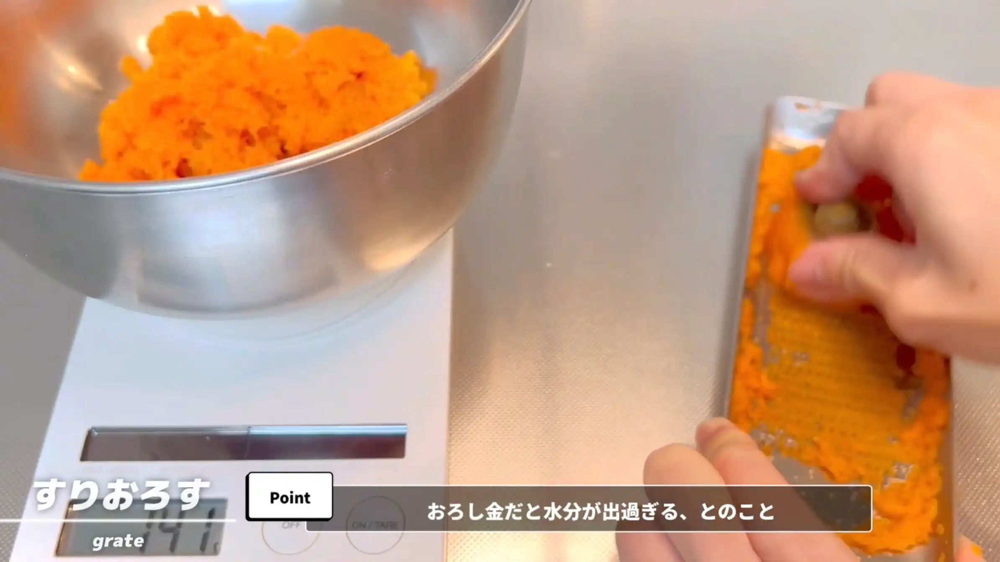
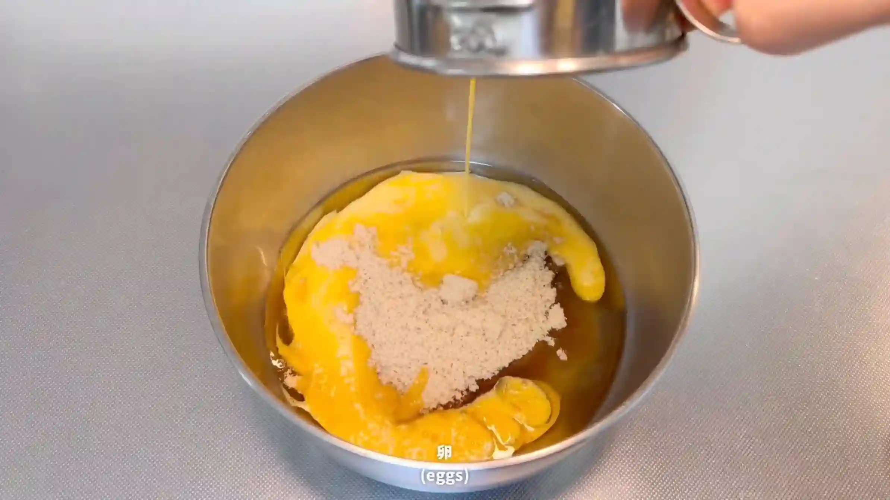
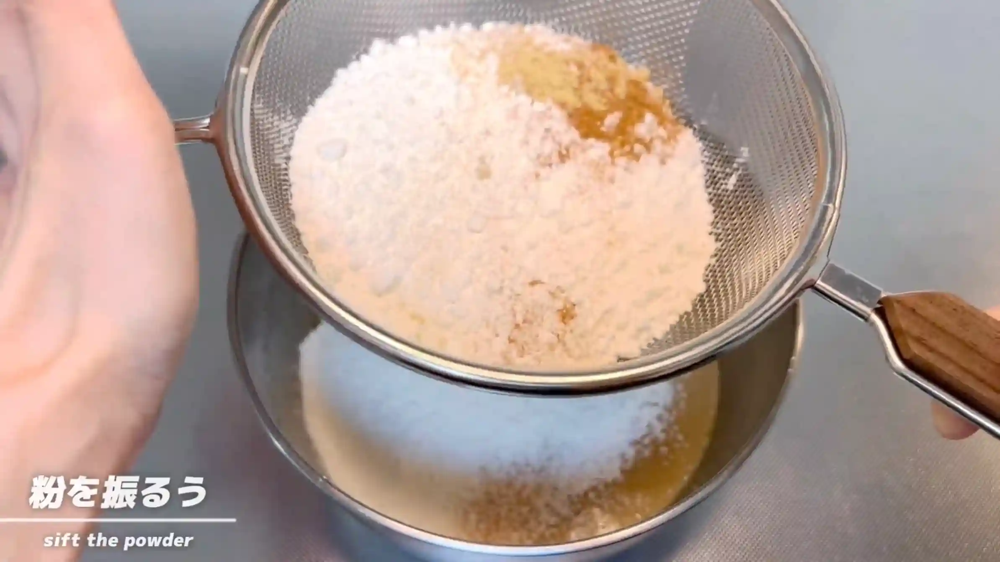
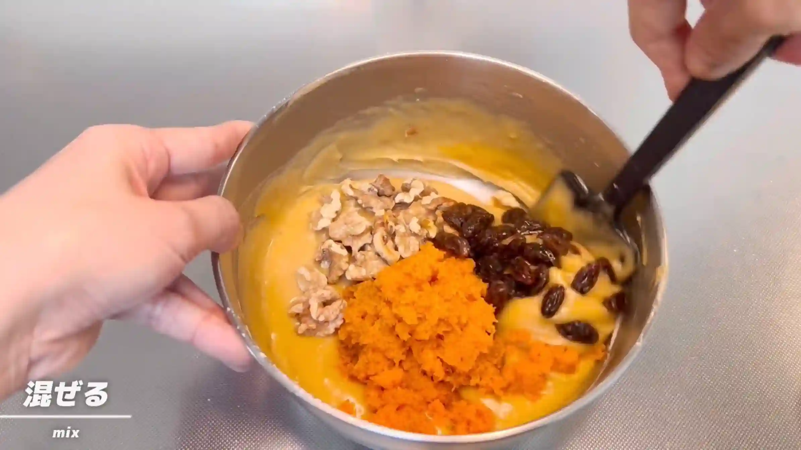
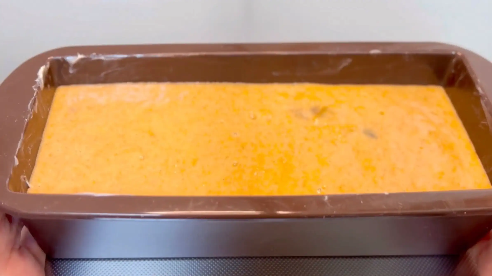
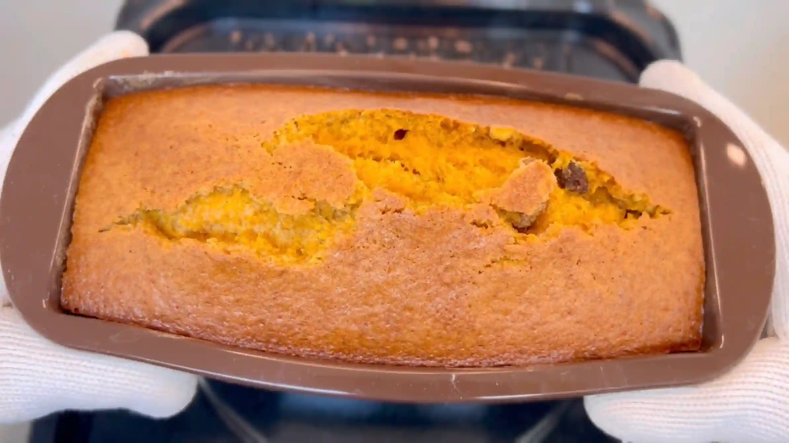
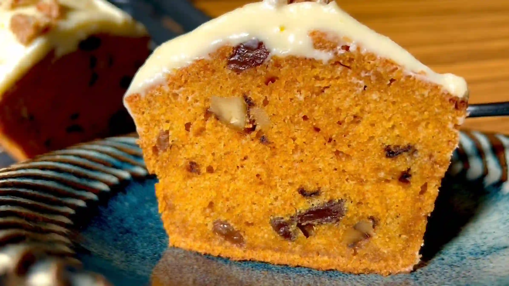
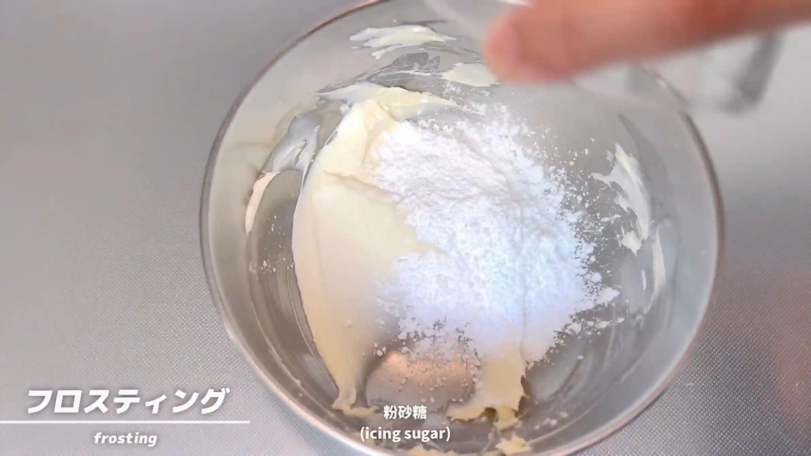
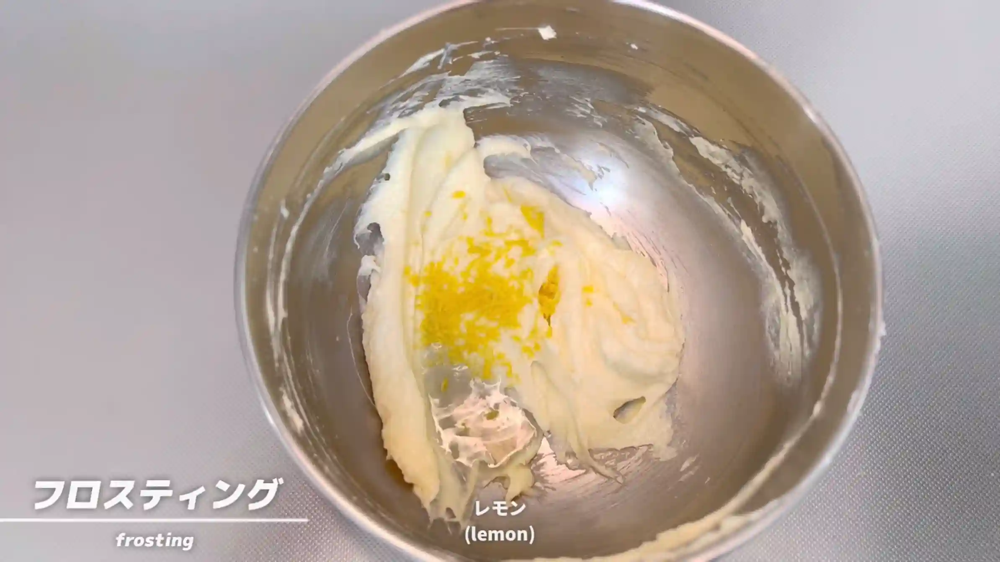

材料
※粉量を変えると自動計算されます
生地
フロスティング
型
作り方
生地
STEP 1
人参をすりおろす
人参を皮ごとすりおろします。すりおろした人参は生地になじみやすく、焼き上がったケーキもしっとりとした食感に仕上がります。
人参を皮ごとすりおろします。すりおろした人参は生地になじみやすく、焼き上がったケーキもしっとりとした食感に仕上がります。

STEP 2
オーブンを180℃に予熱する
生地を作る間にオーブンを180℃に予熱しておきます。生地ができたらすぐに焼けるよう、あらかじめ焼成温度まで温めておきます。
生地を作る間にオーブンを180℃に予熱しておきます。生地ができたらすぐに焼けるよう、あらかじめ焼成温度まで温めておきます。
STEP 3
米油、砂糖、卵を混ぜる（[動画 01:21]）
米油、砂糖、卵をボウルに入れ、全体がなめらかになるまで混ぜ合わせます。
米油、砂糖、卵をボウルに入れ、全体がなめらかになるまで混ぜ合わせます。

STEP 4
粉類とスパイスを加え、混ぜる（[動画 01:32]）
ふるった薄力粉、ベーキングパウダー、重曹、シナモン、ジンジャーパウダーを加え、粉気がなくなるまでヘラで混ぜ合わせます。シナモンだけではなく、ジンジャーパウダーを加えると、スパイスの香りが豊かになり、お店のような本格的な味わいに変化するのでおすすめです。
ふるった薄力粉、ベーキングパウダー、重曹、シナモン、ジンジャーパウダーを加え、粉気がなくなるまでヘラで混ぜ合わせます。シナモンだけではなく、ジンジャーパウダーを加えると、スパイスの香りが豊かになり、お店のような本格的な味わいに変化するのでおすすめです。

STEP 5
残りの材料を加え、混ぜる（[動画 02:09]）
すりおろした人参と胡桃、レーズン、チョコチップを加え、全体に具材が行き渡るように混ぜ合わせます。具材が全体に行き渡ったら、混ぜすぎないようにします。
すりおろした人参と胡桃、レーズン、チョコチップを加え、全体に具材が行き渡るように混ぜ合わせます。具材が全体に行き渡ったら、混ぜすぎないようにします。

STEP 6
生地を型に流し入れる
型に生地を流し入れ、表面を軽くならします。今回はシリコン型で焼くため、生地をそのまま入れていますが、必要に応じてバターを塗ったり、オーブンシートを敷いたりしてください。
型に生地を流し入れ、表面を軽くならします。今回はシリコン型で焼くため、生地をそのまま入れていますが、必要に応じてバターを塗ったり、オーブンシートを敷いたりしてください。

STEP 7
オーブン180℃で40分焼く
表面がきつね色になり、竹串を刺して生地がついてこなくなるまで焼きます。焼き時間は目安とし、焼き色や生地の状態を確認しながら、ご家庭のオーブンに合わせて調整してください。
表面がきつね色になり、竹串を刺して生地がついてこなくなるまで焼きます。焼き時間は目安とし、焼き色や生地の状態を確認しながら、ご家庭のオーブンに合わせて調整してください。

STEP 8
STEP 9
ケーキにフロスティングを塗る
ケーキが焼けたら型から外し、冷ましてからフロスティングを塗ります。温かいまま塗るとフロスティングがやわらかくなって溶けやすいため、しっかり冷ましてから塗ります。
ケーキが焼けたら型から外し、冷ましてからフロスティングを塗ります。温かいまま塗るとフロスティングがやわらかくなって溶けやすいため、しっかり冷ましてから塗ります。

フロスティング
STEP 1
クリームチーズと粉砂糖を混ぜる
クリームチーズをなめらかにしてから粉砂糖を加え、ダマがなくなるまで混ぜ合わせます。
クリームチーズをなめらかにしてから粉砂糖を加え、ダマがなくなるまで混ぜ合わせます。

STEP 2
レモン汁、レモンの皮を加えて混ぜる
レモン汁とレモンの皮を加えて混ぜ合わせます。レモンの酸味と香りが加わることで、クリームチーズのコクが引き立ち、さっぱりとした味わいになります。レモンの代わりにオレンジの皮を加えても、香りよくおいしく仕上がります。
レモン汁とレモンの皮を加えて混ぜ合わせます。レモンの酸味と香りが加わることで、クリームチーズのコクが引き立ち、さっぱりとした味わいになります。レモンの代わりにオレンジの皮を加えても、香りよくおいしく仕上がります。

動画でチェック
おいしく作るためのワンポイントコラム
お友達から「THE CITY BAKERYのキャロットケーキが美味しいよ！」と教えてもらい食べに行ったところ、その美味しさに大感激！今回はあの感動を再現すべく、THE CITY BAKERY風の『キャロットケーキ』を作りました。にんじんをたっぷり使ったしっとり生地に秘密のスパイスを効かせた、こだわりの「3つのコツ」をご紹介します。
① お店の味に近づけるスパイスとトッピングのコツ
定番のシナモンだけでなく、隠し味にジンジャーパウダーを加えるのが美味しさを引き立てる最大のポイント！ほんの少しプラスするだけで香りが格段に豊かになり、本格的な味わいに変化します。さらにチョコチップを加えるのも本家流。スパイスの効いた生地にコクがプラスされ、全体がギュッとまとまって美味しさがアップします。
② 生地をしっかり膨らますコツ
生地を型いっぱいにふっくらと焼き上げるため、ベーキングパウダーと重曹をダブル使いします。しっかりガスを発生させて立体的な膨らみを出すベーキングパウダーに加え、生地のpHを調整して美味しそうな焼き色と香ばしさを引き出す重曹を合わせることで、お店のようなリッチな仕上がりになります。
③ 保存のコツ
焼きたてはスパイス感が強く感じられることがありますが、粗熱を取ったあとに一度冷凍するのがおすすめ！時間をおくことでスパイスの角が取れて生地全体に味が馴染み、驚くほどしっとりとした食感に変化します。
THE CITY BAKERYはケーキはもちろんパンも魅力的で、見ているだけでワクワクする大好きなお店です。今回のレシピが、憧れの味に近づけていると嬉しいです！お好みでチーズフロスティングをのせたりスパイスの配合を変えたりして、ぜひ手作りの美味しさを楽しんでみてください！
① お店の味に近づけるスパイスとトッピングのコツ
定番のシナモンだけでなく、隠し味にジンジャーパウダーを加えるのが美味しさを引き立てる最大のポイント！ほんの少しプラスするだけで香りが格段に豊かになり、本格的な味わいに変化します。さらにチョコチップを加えるのも本家流。スパイスの効いた生地にコクがプラスされ、全体がギュッとまとまって美味しさがアップします。
② 生地をしっかり膨らますコツ
生地を型いっぱいにふっくらと焼き上げるため、ベーキングパウダーと重曹をダブル使いします。しっかりガスを発生させて立体的な膨らみを出すベーキングパウダーに加え、生地のpHを調整して美味しそうな焼き色と香ばしさを引き出す重曹を合わせることで、お店のようなリッチな仕上がりになります。
③ 保存のコツ
焼きたてはスパイス感が強く感じられることがありますが、粗熱を取ったあとに一度冷凍するのがおすすめ！時間をおくことでスパイスの角が取れて生地全体に味が馴染み、驚くほどしっとりとした食感に変化します。
THE CITY BAKERYはケーキはもちろんパンも魅力的で、見ているだけでワクワクする大好きなお店です。今回のレシピが、憧れの味に近づけていると嬉しいです！お好みでチーズフロスティングをのせたりスパイスの配合を変えたりして、ぜひ手作りの美味しさを楽しんでみてください！


たっぷりのスパイスを加えて、人気ショップ（THE CITY BAKERY）の味を再現した『キャロットケーキ』のレシピです。にんじんの美味しさを引き出すための工夫を詰め込みました。コラムでは「お店の味に近づけるスパイスとトッピングのコツ」「生地をしっかり膨らますコツ」「保存のコツ」の3つのポイントをご紹介します。